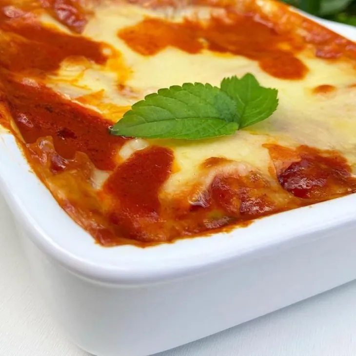

Lasanha

Portuguese Language
Ingredientes:
- 1 fio de azeite
- 2 cebolas em cubos
- 500 gramas de filé de frango picado
- Água para cozinhar
- 2 tomates em cubos
- 1 pimentão em cubos
- 300 gramas de extrato de tomate
- Sal a gosto
- 200 gramas de massa de lasanha
- 250 gramas de presunto fatiado
- 250 gramas de queijo fatiado
Modo de Preparo:
- Reúna todos os ingredientes;
- Em uma panela, aqueça o azeite e refogue uma cebola até ficar transparente.
- Adicione o frango e continue refogando até começar a dourar, mexendo às vezes.
- Acrescente um pouco de água, cozinhe até a carne ficar macia e desligue o fogo.
- Desfie o frango, coloque-o na mesma panela e junte a outra cebola, o tomate, o pimentão, o extrato de tomate e o sal.
- Misture tudo e refogue por mais alguns minutos, até que o molho esteja encorpado.
- Para a montagem, em um refratário, intercale camadas de molho, massa, presunto e queijo.
- Repita o processo até acabarem os ingredientes, finalizando com queijo.
- Leve ao forno preaquecido a 180°C por cerca de 20 minutos e está pronto.
- Agora é só servir! Bom apetite.
Top of the page
Return to main page